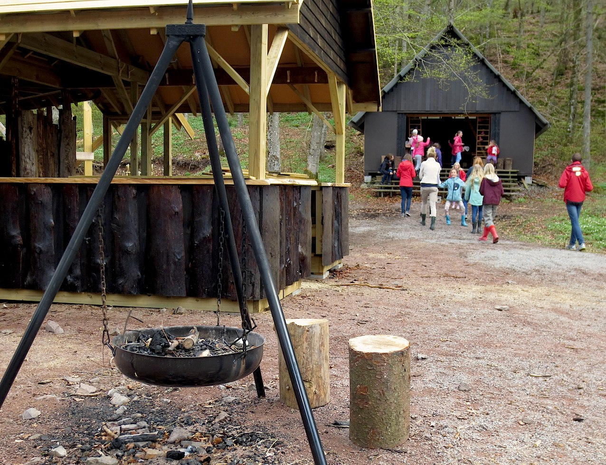

Konfirmantleir, menighetsweekend, organisasjonsleir og lignende leirarrangement
Aarholt-tunet Gjestegård og Leirskole er bygget opp for at barn, ungdom, familier og voksne skal få oppleve utvikling, læring, mestring, samarbeidstrening og opplevelser. De mange aktivitetene, alle dyrene, de store områdene rundt stedet som ikke har innsyn fra naboer, de mange fellesrommene, - det er mye som taler for en flott ramme rundt leiren.
Barne- og ungdomsarrangement har vi hovedsakelig fra påske og til ut oktober. Men det er også mulig å komme i vinterhalvåret.
Leirene kan legges til både Gjestegården/Leirskolen og til Villmarkstunet eller Bøketunet. Program kan bestilles alle steder. Også program utover det som har med de vanlige aktivitetene og dyrstellet å gjøre. Eksempler på annet program som det kan legges til rette for er; "etikkundervisning", "skaperverket", "gudstjenesteverksted", "sang og musikk", "lyssti /kveldsandakt", "ord til ettertanke /samtale".
Over ser vi "Høysalen" innredet som et "stille rom / kapell". I tillegg har vi også et eget kapell som du kan se bilder av på retreatsiden. Det ble innviet i mai 2013.
Villmarkstunet.
Aarholt-tunet har bygget opp et Villmarkstun med mulighet for overnatting og aktiviteter. Her er det også mulig med selvhushold. Vi kommer gjerne med forslag til gjennomføring av måltidene med tanke på selvhushold, menyer osv. Aarholt-tunet kjører ned vann og ved samt utstyr for matlaging. Villmarkstunet består av 10 små gapahuker med plass til 3 i hver, pluss Megahuken som er på ca 80 m2 og har plass til ca 30 pers. til overnatting, samt alle 60 til bespisning hvis det regner og en ikke kan spise ute. Ute er det ute-benker for 60 i en stor ring. Megahuken består av tett tak, tette vegger og gulv, og har bålplass i midten for laging av mat over leirbålet. (Se for øvrig "Villmarkstunet").
Anbefalte aktiviteter som Aarholt-tunet kan ha for konfirmantleiren i Villmarkstunet, er:
- Flåtepadling.
- Fisking.
- Luftgeværskyting.
- Kløyving av ved.
For egenaktivitet er det mulig med refleksløype, tur til badevann og annet.
Bøketunet.
Aarholt-tunet bygger opp et tilsvarende overnattingssted (ca.20-60 stk) bare 500 meter fra gårdstunet. Her er det også mulig å frakte inn utstyr med bil/traktor.

Her er en nærmere om en ønsker å bestille powerløype-program eller om det er slik at noen må sove innomhus. (Se bilder på "Villmarkstunet" og se info om programaktiviteter på "Aktiviteter").
Kontakt oss for forespørsler og for avtaleark ved bestillinger.
Aarholt-tunet Gjestegård og Leirskole
Årholtveien 80,
3160 Stokke
Tlf. 33 33 90 96 epost: oss@aarholt-tunet.no